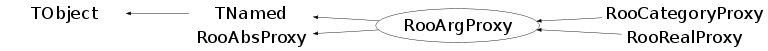

class RooArgProxy: public TNamed, public RooAbsProxy
RooArgProxy is the abstact interface for RooAbsArg proxy classes. A RooArgProxy is the general mechanism to store references to other RooAbsArgs inside a RooAbsArg Creating a RooArgProxy adds the proxied object to the proxy owners server list (thus receiving value/shape dirty flags from it) and registers itself with the owning class. The latter allows the owning class to change the proxied pointer when the server it points to gets redirected (e.g. in a copy or clone operation)
Function Members (Methods)
public:
| RooArgProxy() | |
| RooArgProxy(const RooArgProxy&) | |
| RooArgProxy(const char* name, RooAbsArg* owner, const RooArgProxy& other) | |
| RooArgProxy(const char* name, const char* desc, RooAbsArg* owner, Bool_t valueServer, Bool_t shapeServer, Bool_t proxyOwnsArg = kFALSE) | |
| RooArgProxy(const char* name, const char* desc, RooAbsArg* owner, RooAbsArg& arg, Bool_t valueServer, Bool_t shapeServer, Bool_t proxyOwnsArg = kFALSE) | |
| virtual | ~RooArgProxy() |
| RooAbsArg* | absArg() const |
| void | TObject::AbstractMethod(const char* method) const |
| virtual void | TObject::AppendPad(Option_t* option = "") |
| virtual void | TObject::Browse(TBrowser* b) |
| static TClass* | Class() |
| virtual const char* | TObject::ClassName() const |
| virtual void | TNamed::Clear(Option_t* option = "") |
| virtual TObject* | TNamed::Clone(const char* newname = "") const |
| virtual Int_t | TNamed::Compare(const TObject* obj) const |
| virtual void | TNamed::Copy(TObject& named) const |
| virtual void | TObject::Delete(Option_t* option = "")MENU |
| virtual Int_t | TObject::DistancetoPrimitive(Int_t px, Int_t py) |
| virtual void | TObject::Draw(Option_t* option = "") |
| virtual void | TObject::DrawClass() constMENU |
| virtual TObject* | TObject::DrawClone(Option_t* option = "") constMENU |
| virtual void | TObject::Dump() constMENU |
| virtual void | TObject::Error(const char* method, const char* msgfmt) const |
| virtual void | TObject::Execute(const char* method, const char* params, Int_t* error = 0) |
| virtual void | TObject::Execute(TMethod* method, TObjArray* params, Int_t* error = 0) |
| virtual void | TObject::ExecuteEvent(Int_t event, Int_t px, Int_t py) |
| virtual void | TObject::Fatal(const char* method, const char* msgfmt) const |
| virtual void | TNamed::FillBuffer(char*& buffer) |
| virtual TObject* | TObject::FindObject(const char* name) const |
| virtual TObject* | TObject::FindObject(const TObject* obj) const |
| virtual Option_t* | TObject::GetDrawOption() const |
| static Long_t | TObject::GetDtorOnly() |
| virtual const char* | TObject::GetIconName() const |
| virtual const char* | TNamed::GetName() const |
| virtual char* | TObject::GetObjectInfo(Int_t px, Int_t py) const |
| static Bool_t | TObject::GetObjectStat() |
| virtual Option_t* | TObject::GetOption() const |
| virtual const char* | TNamed::GetTitle() const |
| virtual UInt_t | TObject::GetUniqueID() const |
| virtual Bool_t | TObject::HandleTimer(TTimer* timer) |
| virtual ULong_t | TNamed::Hash() const |
| virtual void | TObject::Info(const char* method, const char* msgfmt) const |
| virtual Bool_t | TObject::InheritsFrom(const char* classname) const |
| virtual Bool_t | TObject::InheritsFrom(const TClass* cl) const |
| virtual void | TObject::Inspect() constMENU |
| void | TObject::InvertBit(UInt_t f) |
| virtual TClass* | IsA() const |
| virtual Bool_t | TObject::IsEqual(const TObject* obj) const |
| virtual Bool_t | TObject::IsFolder() const |
| Bool_t | TObject::IsOnHeap() const |
| virtual Bool_t | TNamed::IsSortable() const |
| Bool_t | TObject::IsZombie() const |
| virtual void | TNamed::ls(Option_t* option = "") const |
| void | TObject::MayNotUse(const char* method) const |
| virtual const char* | name() const |
| virtual Bool_t | TObject::Notify() |
| const RooArgSet* | RooAbsProxy::nset() const |
| void | TObject::Obsolete(const char* method, const char* asOfVers, const char* removedFromVers) const |
| static void | TObject::operator delete(void* ptr) |
| static void | TObject::operator delete(void* ptr, void* vp) |
| static void | TObject::operator delete[](void* ptr) |
| static void | TObject::operator delete[](void* ptr, void* vp) |
| void* | TObject::operator new(size_t sz) |
| void* | TObject::operator new(size_t sz, void* vp) |
| void* | TObject::operator new[](size_t sz) |
| void* | TObject::operator new[](size_t sz, void* vp) |
| RooArgProxy& | operator=(const RooArgProxy&) |
| virtual void | TObject::Paint(Option_t* option = "") |
| virtual void | TObject::Pop() |
| virtual void | TNamed::Print(Option_t* option = "") const |
| virtual void | print(ostream& os, Bool_t addContents = kFALSE) const |
| virtual Int_t | TObject::Read(const char* name) |
| virtual void | TObject::RecursiveRemove(TObject* obj) |
| void | TObject::ResetBit(UInt_t f) |
| virtual void | TObject::SaveAs(const char* filename = "", Option_t* option = "") constMENU |
| virtual void | TObject::SavePrimitive(ostream& out, Option_t* option = "") |
| void | TObject::SetBit(UInt_t f) |
| void | TObject::SetBit(UInt_t f, Bool_t set) |
| virtual void | TObject::SetDrawOption(Option_t* option = "")MENU |
| static void | TObject::SetDtorOnly(void* obj) |
| virtual void | TNamed::SetName(const char* name)MENU |
| virtual void | TNamed::SetNameTitle(const char* name, const char* title) |
| static void | TObject::SetObjectStat(Bool_t stat) |
| virtual void | TNamed::SetTitle(const char* title = "")MENU |
| virtual void | TObject::SetUniqueID(UInt_t uid) |
| virtual void | ShowMembers(TMemberInspector& insp) |
| virtual Int_t | TNamed::Sizeof() const |
| virtual void | Streamer(TBuffer& b) |
| void | StreamerNVirtual(TBuffer& b) |
| virtual void | TObject::SysError(const char* method, const char* msgfmt) const |
| Bool_t | TObject::TestBit(UInt_t f) const |
| Int_t | TObject::TestBits(UInt_t f) const |
| virtual void | TObject::UseCurrentStyle() |
| virtual void | TObject::Warning(const char* method, const char* msgfmt) const |
| virtual Int_t | TObject::Write(const char* name = 0, Int_t option = 0, Int_t bufsize = 0) |
| virtual Int_t | TObject::Write(const char* name = 0, Int_t option = 0, Int_t bufsize = 0) const |
protected:
| virtual void | changeDataSet(const RooArgSet* newNormSet) |
| virtual void | RooAbsProxy::changeNormSet(const RooArgSet* newNormSet) |
| virtual Bool_t | changePointer(const RooAbsCollection& newServerSet, Bool_t nameChange = kFALSE, Bool_t factoryInitMode = kFALSE) |
| virtual void | TObject::DoError(int level, const char* location, const char* fmt, va_list va) const |
| Bool_t | isShapeServer() const |
| Bool_t | isValueServer() const |
| void | TObject::MakeZombie() |
Data Members
public:
| enum TObject::EStatusBits { | kCanDelete | |
| kMustCleanup | ||
| kObjInCanvas | ||
| kIsReferenced | ||
| kHasUUID | ||
| kCannotPick | ||
| kNoContextMenu | ||
| kInvalidObject | ||
| }; | ||
| enum TObject::[unnamed] { | kIsOnHeap | |
| kNotDeleted | ||
| kZombie | ||
| kBitMask | ||
| kSingleKey | ||
| kOverwrite | ||
| kWriteDelete | ||
| }; |
protected:
| RooAbsArg* | _arg | Pointer to content of proxy |
| Bool_t | _isFund | If true proxy contains an lvalue |
| RooArgSet* | RooAbsProxy::_nset | ! Normalization set to be used for evaluation of RooAbsPdf contents |
| Bool_t | _ownArg | If true proxy owns contents |
| RooAbsArg* | _owner | Pointer to owner of proxy |
| Bool_t | _shapeServer | If true contents is shape server of owner |
| Bool_t | _valueServer | If true contents is value server of owner |
| TString | TNamed::fName | object identifier |
| TString | TNamed::fTitle | object title |
Class Charts
{kind=link}
{kind=link}
{kind=link}
{kind=link}

Function documentation
RooArgProxy(const char* name, const char* desc, RooAbsArg* owner, Bool_t valueServer, Bool_t shapeServer, Bool_t proxyOwnsArg = kFALSE)
Constructor with owner and proxied variable.
RooArgProxy(const char* name, const char* desc, RooAbsArg* owner, RooAbsArg& arg, Bool_t valueServer, Bool_t shapeServer, Bool_t proxyOwnsArg = kFALSE)
Constructor with owner and proxied variable. The valueServer and shapeServer booleans control if the inserted client-server link in the owner propagates value and/or shape dirty flags. If proxyOwnsArg is true, the proxy takes ownership of its component
Bool_t changePointer(const RooAbsCollection& newServerSet, Bool_t nameChange = kFALSE, Bool_t factoryInitMode = kFALSE)
void changeDataSet(const RooArgSet* newNormSet)
Change the normalization set that should be offered to the content objects getVal() when evaluated.
RooArgProxy(const char* name, const char* desc, RooAbsArg* owner, Bool_t valueServer, Bool_t shapeServer, Bool_t proxyOwnsArg = kFALSE)